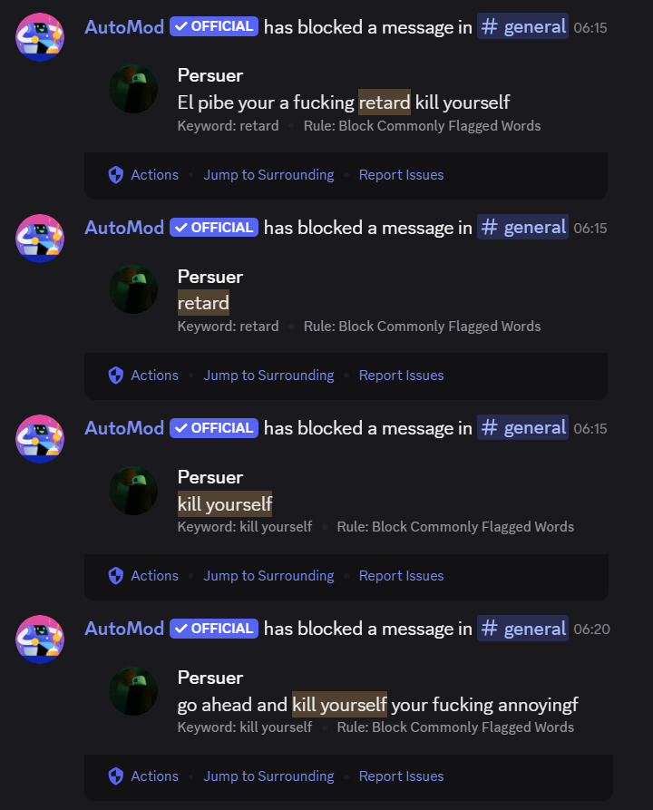

Rule breaking messages
Anything that breaks the explicitely mentioned behavior in rules can be given a warn
a warn can be given by doing "/warn [username] [reason]"
The warned user will get a DM by our bot juniper.bot with the reason and for how long the warn lasts (standard is 14 days)
if you aren't sure if a message is accountable for a warn, you can ask other moderators for their oppinion, if they agree then proceed with the warn
Warns given via this method will automatically apply the punishment that is associated with that same amount of warns
bots
Since the server has automod and Juniper both as moderation, a lot of the work will be done by them as you can see here
Users trying to bypass this filter are most likely up to no good and if they do, a sufficient consuquence is to warn them
Gray areas
Most images are fine on the server, most of the audience is 18+ and so ecchi images are okay